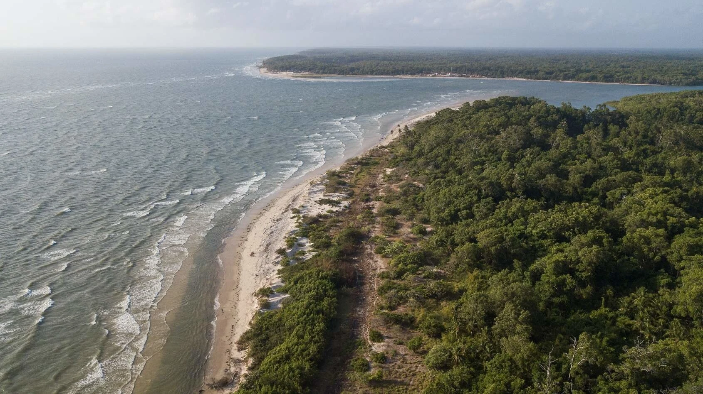
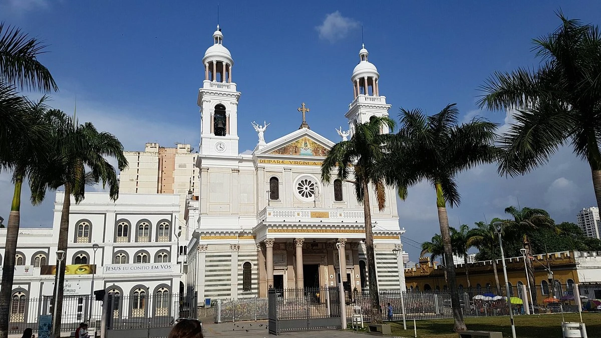
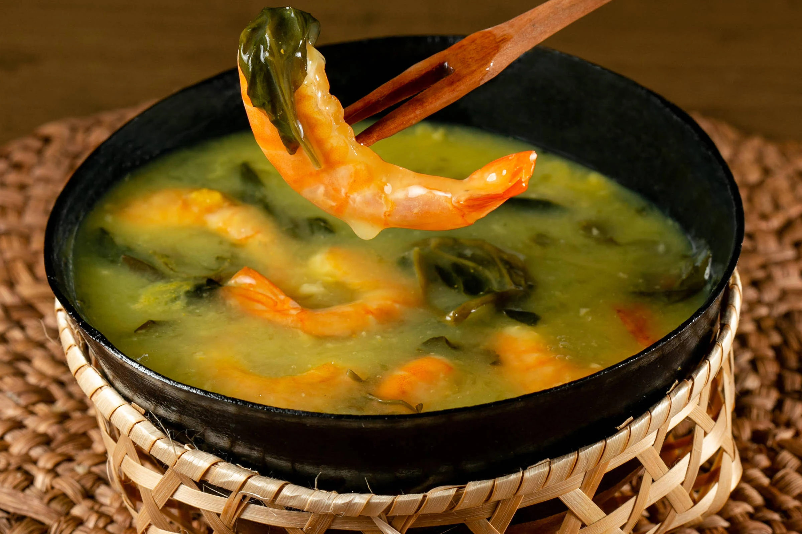
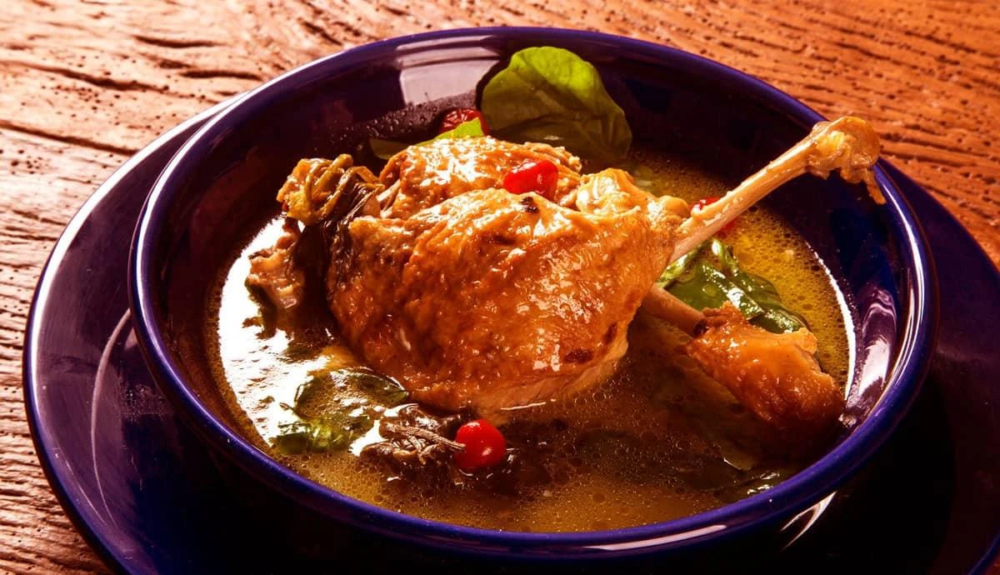
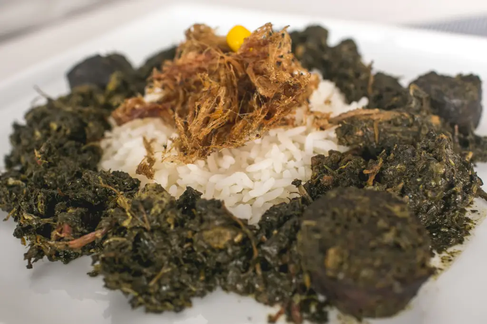

Capital
Belém
Conheça destinos, culturas, sabores e paisagens de todas as regiões
brasileiras.
Destinos, culturas e paisagens
incríveis te esperam.
O Pará é um dos maiores estados do Brasil e está localizado na Região Norte. Conhecido por sua vasta floresta amazônica, rica biodiversidade e forte influência indígena e ribeirinha, o estado oferece experiências únicas de ecoturismo, cultura e gastronomia.

Belém
Aproximadamente 1.245.870 km²
Cerca de 8,7 milhões de habitantes
Norte

Complexo turístico às margens da Baía do Guajará, com restaurantes, lojas, eventos culturais e uma bela vista do pôr do sol.

Maior ilha fluviomarítima do mundo, famosa por suas praias, fazendas de búfalos e rica cultura local.

Importante templo religioso do estado, conhecido por sediar as celebrações do Círio de Nazaré.

Caldo quente preparado com tucupi, goma de mandioca, camarão seco e jambu.

Prato tradicional feito com pato cozido em tucupi, servido com jambu.

Prato preparado com folhas de mandioca cozidas por vários dias e diferentes tipos de carnes. Prato preparado com folhas de mandioca cozidas por vários dias e diferentes tipos de carnes.
O Pará possui clima equatorial, quente e úmido durante todo o ano, com chuvas mais intensas entre dezembro e maio.
O Pará possui clima equatorial, quente e úmido durante todo o ano, com chuvas mais intensas entre dezembro e maio.
A região de Belém é ideal para quem busca cultura e gastronomia. Já a Ilha de Marajó é perfeita para contato com a natureza e praias de água doce.
A região de Belém é ideal para quem busca cultura e gastronomia. Já a Ilha de Marajó é perfeita para contato com a natureza e praias de água doce.
A culinária paraense é considerada uma das mais autênticas do Brasil, com ingredientes amazônicos como tucupi, jambu, açaí e peixes regionais.
A culinária paraense é considerada uma das mais autênticas do Brasil, com ingredientes amazônicos como tucupi, jambu, açaí e peixes regionais.